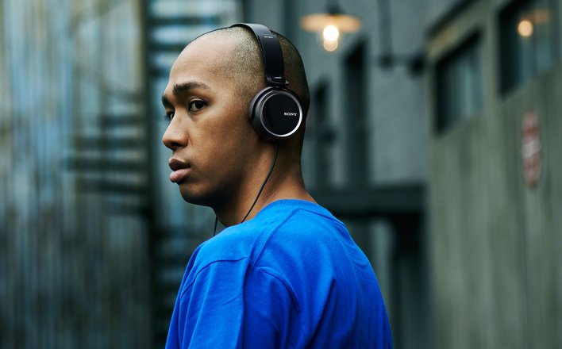
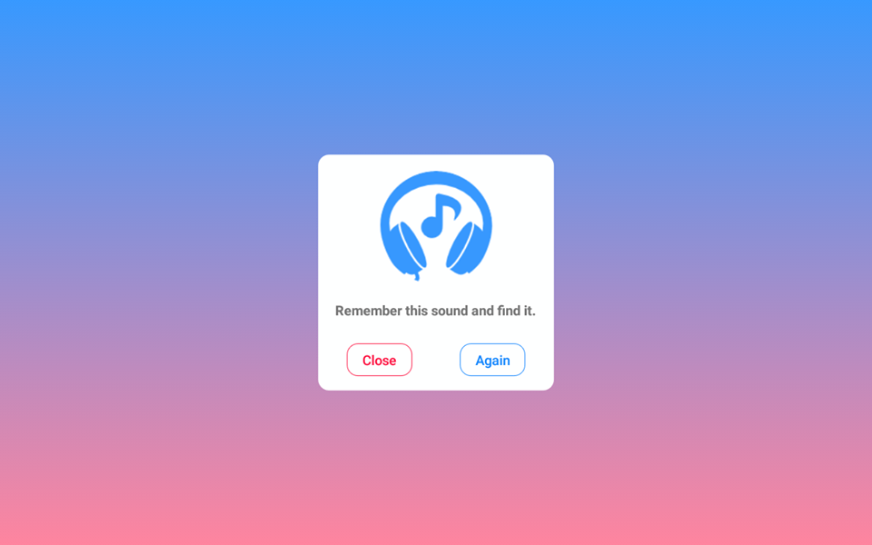
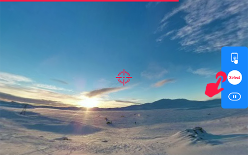
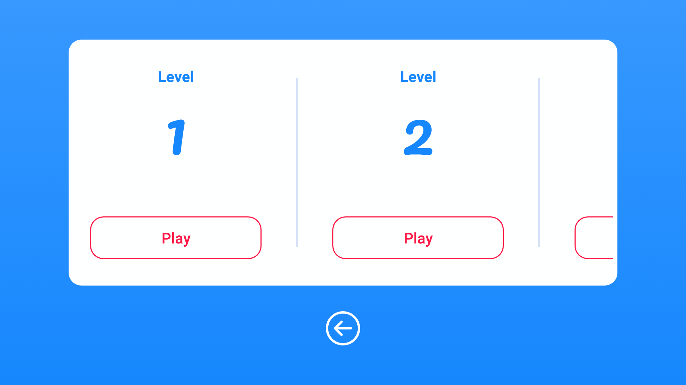

How to use
1. Wear your headphone

To use this treatment you nead to wear a headphone and make sure you put it in the right ear (L headphone on left ear and vice versa).
2. Listen sound

At first you're given a sample sound called the target. Listen carefully because you have to find it.
3. Find sound position
In each game, you will find the target by moving your device. When you move your device around the sound will change respectively. In case your device does not have motion sensor you can drag the screen.
4. Select target

When you feel the target is right in front of you. Hit the select button to check if you're right or not.
5. Level

We make the games more difficult one after one by adding another sounds named as background sound, animal voice, etc. So you have to try not to lose focus on the target.
Back
Next